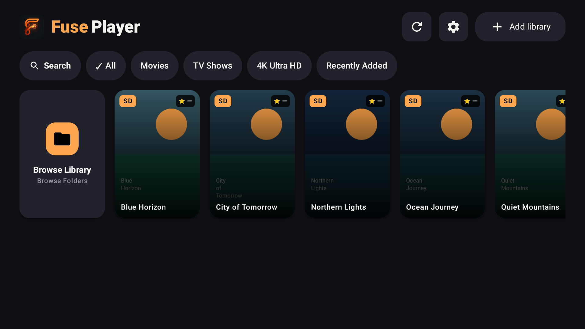

Android TV & Google TV
Settle in and enjoy your videos on the big screen. Television is at the centre of the FusePlayer experience.
A home for your own videos. Made for Android TV and Google TV, with playback on your Android phone and tablet, too.
Explore FusePlayer ↗Get supportANDROID TV / GOOGLE TV / PHONE / TABLET

From files on your device to your network media collection, FusePlayer puts your own content at the heart of playback.
Settle in and enjoy your videos on the big screen. Television is at the centre of the FusePlayer experience.
Play local video files or access media from your configured FTP servers and SMB network shares.
Use FusePlayer on Android phones and tablets when a smaller screen fits the moment.
Questions, playback issues or feedback? Contact FrostCode.
FusePlayer is a media player by FrostCode. You provide the videos and network sources you want to play. For information about saved credentials and external integrations, see our Privacy Policy.